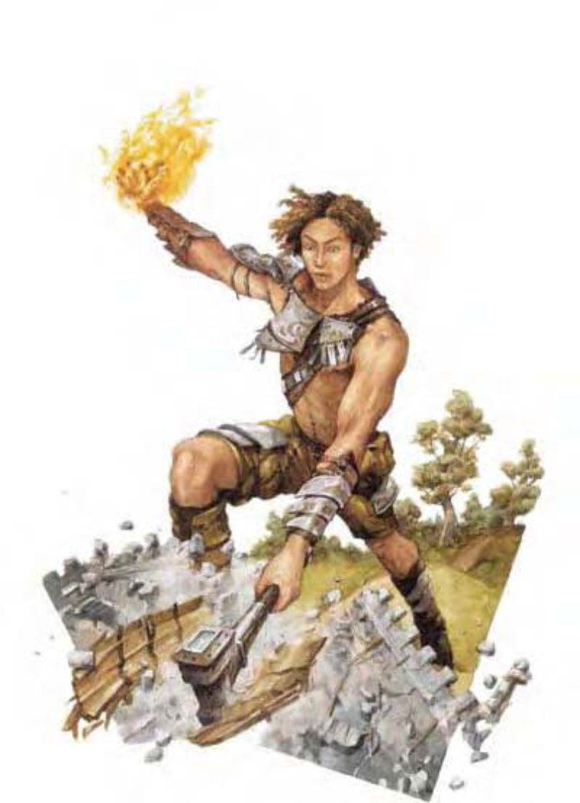

泰坦粗犷无章，将自己视为命运的主宰。他们的寿命远比凡人长，讥笑着近乎无限的青春。泰坦的情绪也比人类强烈，愤怒起来与神�o相媲美。许多泰坦都是服侍善良阵营的强力仆役，但年复一年，泰坦亦曾奋起反抗诸神，部分泰坦因而转向邪恶。邪恶的泰坦可说是好胜的暴君，经常统治着整个人类王国。
泰坦约 25 英尺高，重 14000磅。泰坦通晓深渊语、通用语、天界语、龙语与巨人语。
| 生命骰 | 20d8+280（370HP） |
| 先攻 | +1 |
| 速度 | 穿着半身铠甲时40英尺（8格）；基本速度60英尺 |
| 防御等级 | 38（-2体型、+19天生、+11“4半身铠甲”）、接触8、措手不及38 |
| 基本攻击/擒抱 | +20 / +44 |
| 攻击 | 巨型“+3精金战锤”+37近战（4d6+27 / ×3）；或“+3标枪”+22远程（2d6+19）；或挥击+34（1d8+16） |
| 全力攻击 | 巨型“+3精金战锤”+37 / +32 / +27 / +22近战（4d6+27 / ×3）；或“+3标枪”+22远程（2d6+19）；或2挥击+34（1d8+16） |
| 占据/触及 | 15英尺 / 15英尺 |
| 特殊攻击 | 泰坦怒锤、类法术能力 |
| 特殊能力 | 伤害减免15/守序、黑暗视觉60英尺、法术抗力32豁免检定：强韧+26、反射+13、意志+21 |
| 属性 | 力量43、敏捷12、体质39、智力21、感知28、魅力24 |
| 技能 | 平衡感+7、哄骗+19、攀爬+22、专注+37、手艺任一+28、交涉+11、易容+7（扮演+9）、医疗+20、威吓+32、跳跃+38、知识（任一）+28、聆听+32、表演（演说）+30、察言观色+32、搜索+28、法术辨识+17、侦察+32、生存+9（追踪+11）、游泳+16 |
| 专长 | 震山击、盲战、顺势斩、精通冲撞、精通击破武器、猛力攻击、类法术能力瞬发（“连环闪电”） |
| 环境 | 奥林匹斯神界 |
| 组织 | 单独或成双 |
| 挑战级数 | 21 |
| 宝藏 | 双倍标准，加上“+4半身铠甲”与巨型“+3精金战锤” |
| 阵营 | 总是混乱（任何） |
| 进化 | 21-30HD（超大型）、31-60HD（巨型） |
| 等级修正值 | ― |
泰坦的巨型战锤可造成重大破坏，有时又被称为“泰坦怒锤”。除了高强的战势外，泰坦的速度及魔法力量亦不可等闲视之。
在计算伤害减免时，泰坦的天生武器与持有武器都被视为混乱阵营。
特大型武器（特异）：泰坦持用巨大双手战锤（适用于巨型生物）不具任何减值。
类法术能力：随意施展――“连环闪电”（DC23）、“魅惑怪物”（DC21）、“治疗致命伤”（DC21）、“火焰风暴”（DC24）、“高等解除魔法”、“怪物定身术”（DC22）、“隐形”、“消除隐形”、“浮空术”、“常驻幻影”（DC22）、“变形他人”（仅限人形，持续时间1小时）、“每天3次”――“同游灵界”、“混沌真言”（DC22）、“六��召唤盟友术”；“每天1次”――“异界之门”、“迷宫术”、“流星爆”（DC26）。施法者等级20。豁免检定DC的调整值与魅力调整值相同。
除此之外，善良或中立阵营的泰坦还可使用下列类法术能力：随意施展――“昼明术”、“圣光击”（DC21）、“移除诅咒”（DC21）；每天一次――“高等复原术”。施法者等级20。豁免检定DC的调整值与魅力调整值相同。
邪恶阵营的泰坦可使用下列类法术能力：随意施展――“降咒”（DC21）、“深幽黑暗术”、“邪影击”（DC21）；每天1次――“毕格比粉碎掌”（DC26）。施法者等级20。豁免检定DC的调整值与魅力调整值相同。
移形（超自然）：泰坦可以化为任何体型为小型或中型之人形生物形态。无论形态为何，泰坦都保有特殊攻击：“特大型武器”。
泰坦享受战斗，遇到敌人就奋勇上前。若久攻不下，泰坦则会退后并使用类法术能力或魔法效果来对付。泰坦的“类法术能力瞬发”使他们可用即时动作来施展“连环闪电”，他们经常在近战时同时使用。
战斗前：“消除隐形”或“隐形”。
第1轮：冲刺，并试图击破最危险敌人的武器。同时对远离战团的对手丢出“连环闪电”。
第2轮：全力攻击被卸除武器的对手，并将“连环闪电”丢向其他敌人。
第3轮：退离第一个对手，对找碴的施法者施展“迷宫术”或“流星爆”。
第4轮：击破第二强敌人的武器或对附近所有对手施展“高等解除魔法”。
第5轮：全力攻击附近对手或施展“火焰风暴”。如果仍有危险的敌人，再度瞬发“连环闪电”。
泰坦通常会保留“异界之门”、“同游灵界”，以备在苗头不对时开溜。